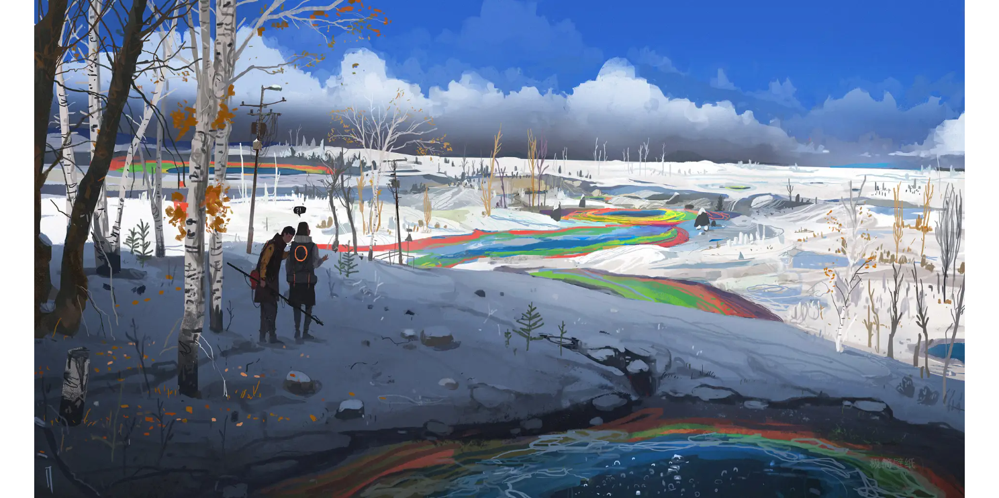
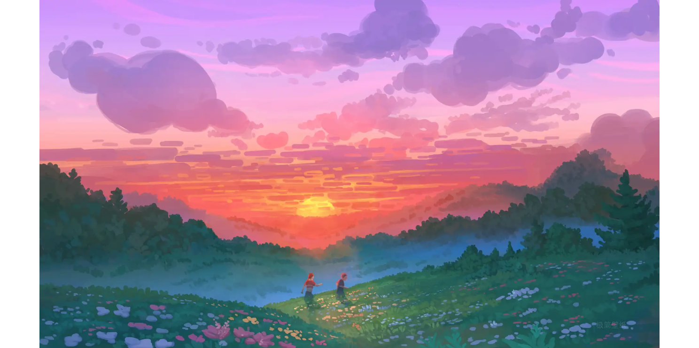

要不断的努力，才能成为更好的自己


你是自由翱翔的海鸟，我是不起眼的小岛。累了，你可以在我这儿歇歇脚；饿了，可以在我这儿寻找你所需要。其实除了你，我啥都不要！
我想要一个自由自在的人生，不是要随时随地地能够 出去旅游，不是要上班不受领导约束，只是在每一个我想要改变，想要尝试一种不一样的生活，想要再向前走一步的时候，我始终都有选择的权利和能力。
走走停停，或南或北
把自己活成一道光，潇洒且硬气的穿行在这个世界上。
我追求极致的自由，我不讨好任何人，也不顺从别人，我只顺从我自己。
酷的像风，野得像狗，不招人喜欢，倒也自由。
日落太短了，我只想奔赴属于我的远方。
我从没觉得孤独，说的浪漫些我完全自由。
鸟儿自由翱翔天空，对它来说就是幸福；繁星守护明月，对它来说就是快乐；我在这美丽的清晨，给你送去问候，那就是最美的。
愿生活可以如诗般自由，吃想吃的饭，见想见的人，
看喜欢的风景，做可以做的事。心不老，有人一起胡闹，你还在，我依然。